五个人怎么穿、怎么说话
不是让 Charlie 变成某个人；是把他们的造型、性格、内容拆开，拼成 Charlie。英文后括号里是中文；人名/品牌名不译。
先看三张合照：正式 / 运动 / 街头
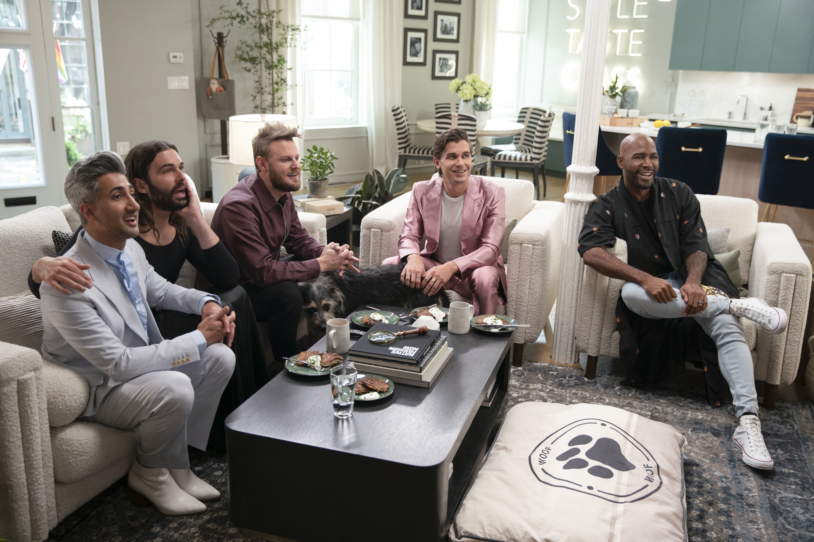

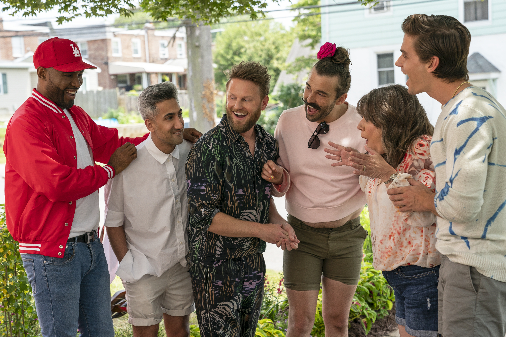
同一组人，三种场合三种穿法：正式（西装/丝质）、运动（背心/短裤/球鞋）、街头（varsity（棒球夹克）/牛仔/短裤）。Charlie 要学的是“会换场合”，不是一套衣服穿到底。
三种 gay 原型（先看这个）
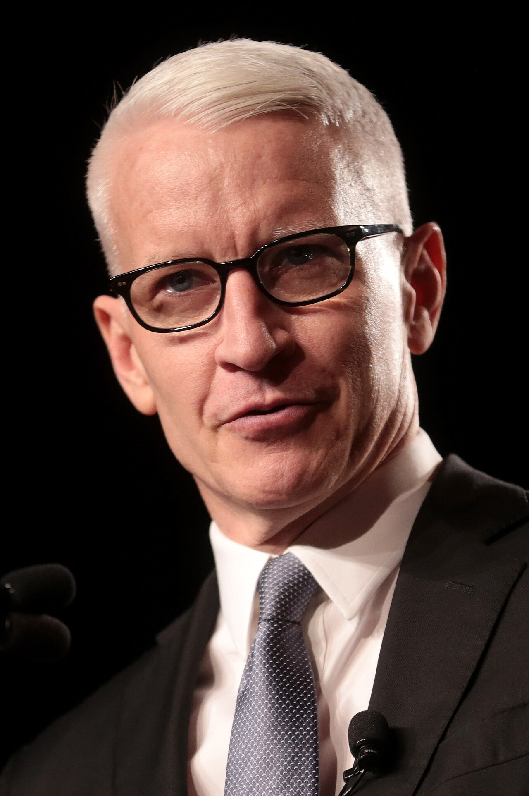
Anderson Cooper
银发、新闻主播的体面、克制。学：银发+剪裁+低饱和；不学：太新闻腔。
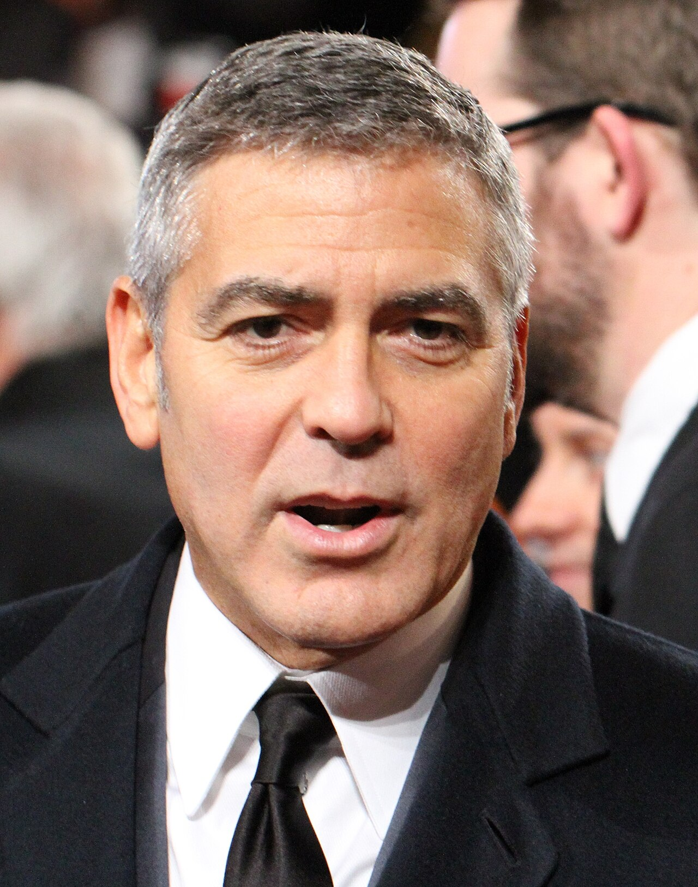
George Clooney
银发、西装、松弛。学：成熟男人的“不费力”；不学：直男安全牌。

Günther Krabbenhöft
帽子、圆框眼镜、领结、色彩。学：用配饰表达“我是谁”；不学：全套 dandy 太舞台。

Tan France
剪裁清楚、颜色克制、说话直接。学：把复杂穿搭讲成 3 条规则。

Bobby Berk
稳、实用、家庭感；不靠花哨。学：把“家”讲成人的生活，不是样板间。
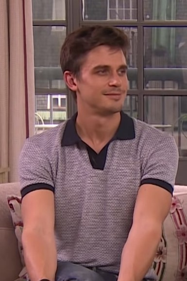
Antoni Porowski
暖、俏、会调情、会自嘲。学：让观众觉得“他会在厨房陪我聊天”。

Jonathan Van Ness
长发、裙装、能量外放。学：自信和 body-positive（身体自爱）；不学：camp（夸张表演型）全套，Charlie 不是这一型。
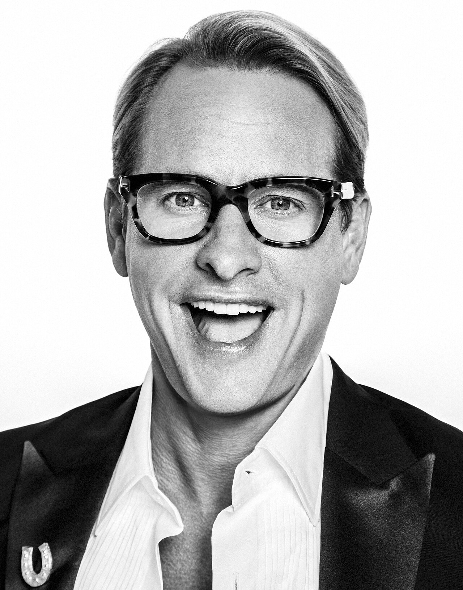
Carson Kressley
舞台感、毒舌、夸张。学：幽默节奏；不学：把毒舌变成表演。
Fab Five（五人组） 全员：每个人两张图
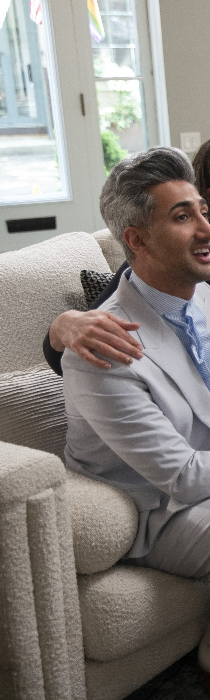
Tan France
身份：英籍南亚裔，gay，已婚，两个孩子的父亲；前服装设计师/买手。
性格：直接、清楚、有点“教导主任”的严格，但温暖；不绕弯子。
造型：剪裁合身、颜色克制、常穿衬衫/西装/切尔西靴；不花哨，靠版型。
Charlie 学什么：把“穿搭”讲成可执行的规则；用“你现在这样不行，但你可以这样”的结构。
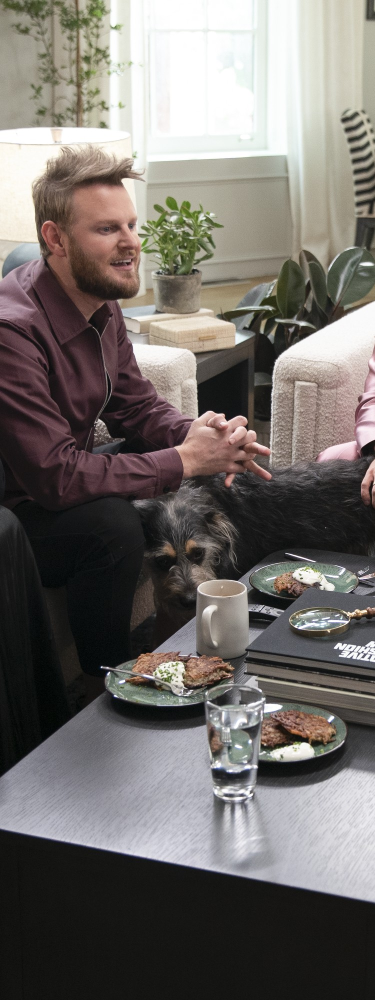
Bobby Berk
身份：美国白人，gay，已婚；室内设计师/品牌创始人；出身保守家庭，靠自己打拼。
性格：稳、务实、体贴、少戏剧化；会把“家”讲成人的生活状态。
造型：合身 T 恤/衬衫、短夹克、干净球鞋；不花哨，靠比例和质感。
Charlie 学什么：“稳”和“实用”；家居内容不要只讲好看，要讲人怎么住。
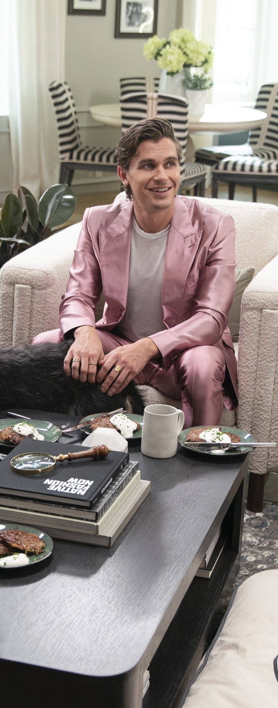
Antoni Porowski
身份：加拿大/美国白人，gay；演员/厨师/美食节目主持人。
性格：暖、俏、好奇、会自嘲、会调情；情绪外露但不压迫。
造型：亨利衫/针织/围裙/休闲衬衫；头发有点乱，像“刚做完饭”。
Charlie 学什么：“暖”和“俏”；让观众觉得他会在厨房陪你聊天，而不是教你做人。
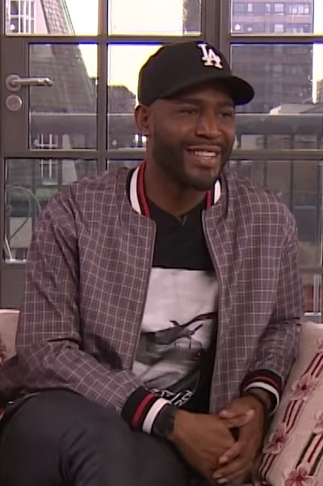
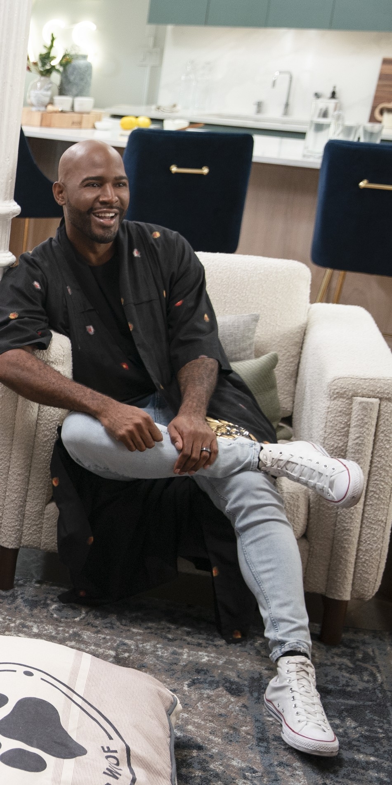
Karamo Brown
身份：美国黑人，gay，父亲；电视人/社会工作者背景。
性格：直接、情绪智慧高、会追问；负责“把话说到心里”。
造型：棒球夹克/格子外套/球鞋/帽子；街头感和亲和力。
Charlie 学什么：“问对问题”的能力；不是 Charlie 的外形参考，是内容深度参考。
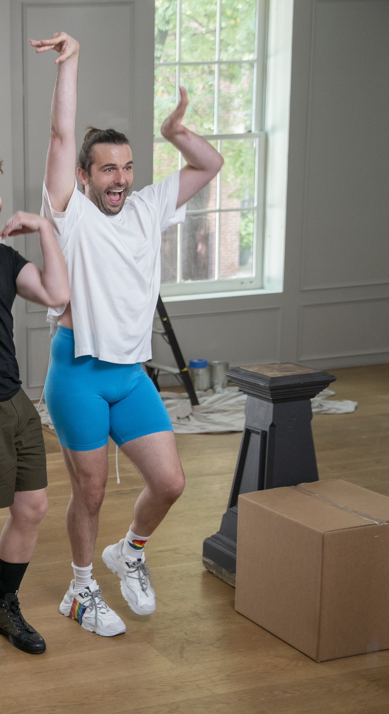
Jonathan Van Ness
身份：美国白人，非二元/queer；发型师/电视人/作家。
性格：高能量、外放、camp（夸张表演型）、body-positive（身体自爱）、直接。
造型：长发、裙装、亮色、露肤；强烈的表演性。
Charlie 学什么：只学“自信”和“不道歉”；不要学 camp（夸张表演型）全套。Charlie 是收敛版。
Charlie 到底取谁
| 来源 | 取什么 | 不取什么 |
|---|---|---|
| Tan France | 造型专业、说话直接、把穿搭讲成规则 | 南亚裔身份；Charlie 是白人，不套用 |
| Bobby Berk | 稳、实用、家居/家庭感 | 太“好男人”的无害感；Charlie 要有毒舌 |
| Antoni Porowski | 暖、俏、美食/待客、会自嘲 | 太“hot guy”的性感路线；Charlie 是 58 岁 |
| Jonathan Van Ness | 自信、body-positive（身体自爱）、不道歉 | camp（夸张表演型）/裙装/高能量；Charlie 不是这一型 |
| Karamo Brown | 问对问题、情绪深度 | 外形/种族身份；Charlie 不套用 |
美国白人 gay 男：性格/身份不是一种
Bobby 型：稳、务实、家庭导向、从保守家庭走出来、靠手艺/生意立住；不戏剧化。
Antoni 型：暖、俏、情绪外露、爱做饭/待客、会自嘲；不装硬汉。
Jonathan 型：camp（夸张表演型）、外放、非二元、body-positive（身体自爱）；强表演性。
Charlie = Bobby 的稳 + Antoni 的暖/俏 + Tan 的造型直接。不是 Jonathan 的 camp（夸张表演型），也不是“普通直男帅大叔”。
生活细节：丈夫 David、两只狗、周末晚餐、艺术/旅行、chosen family（自己选的家人）、健身房、对服务员好。
图源：Netflix / Queer Eye 第五季宣传图（Deadline 发布）、Wikimedia Commons（Anderson Cooper、George Clooney、Carson Kressley、Bobby Berk、Antoni Porowski、Karamo Brown、Jonathan Van Ness、Tan France、Günther Krabbenhöft）。仅作内部造型参考，不用于对外发布；不用真人脸做 AI 角色。Antoni / Karamo 的公开单人图源较少，部分为合照裁切或小图放大，重点看造型，不看像素。